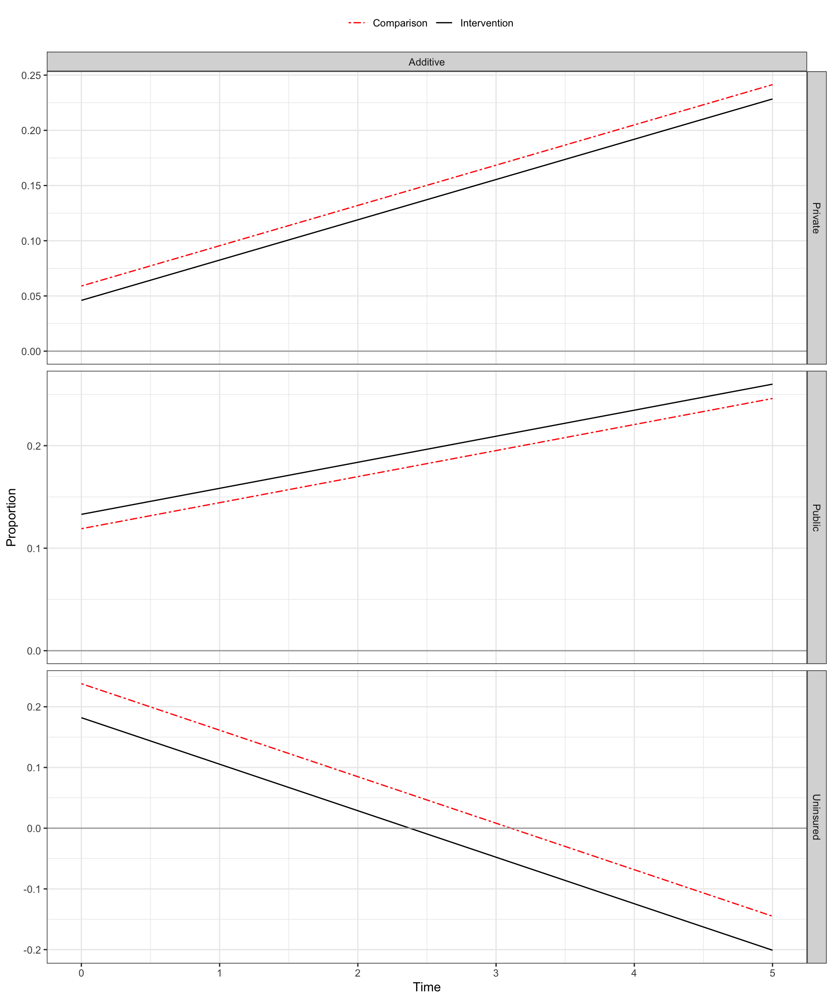
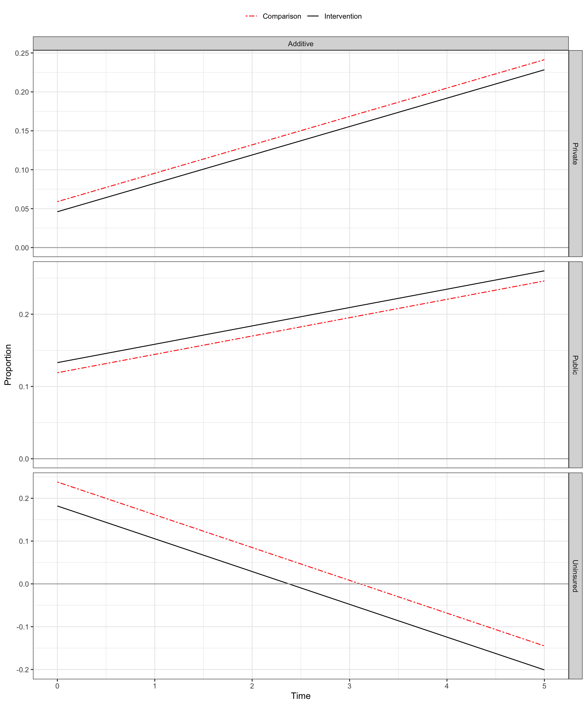
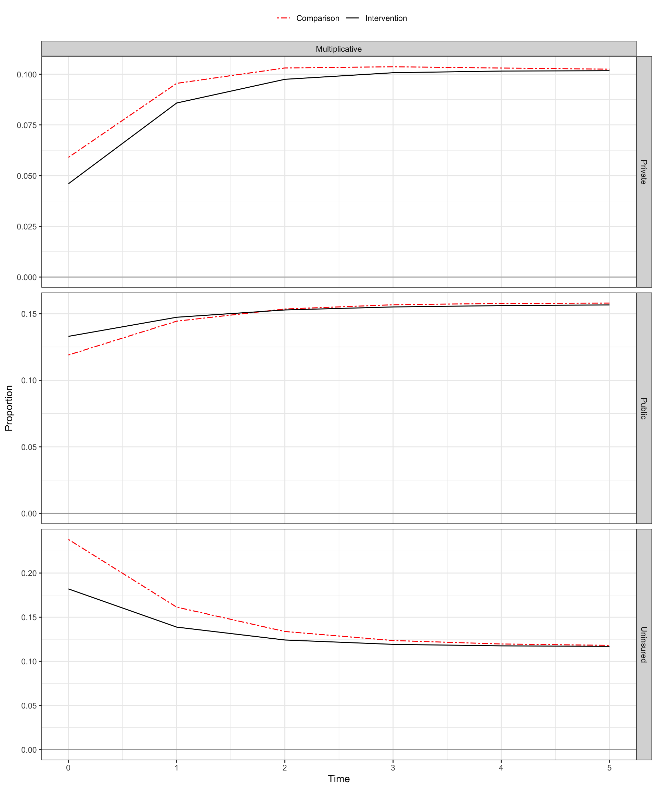
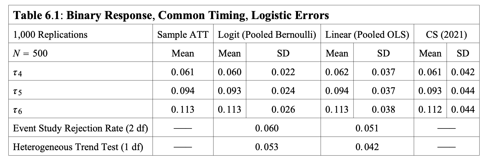
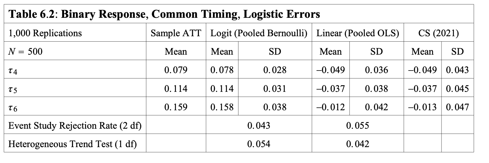
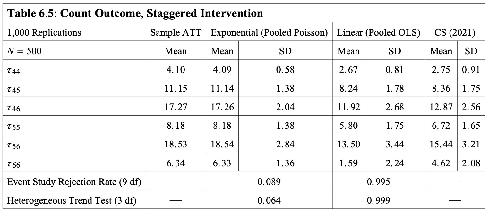

We want to rely on identifying assumptions that make sense given the scale of our outcome.
This means we need to be more flexible about the circumstances under which parallel trends holds:

For categorical outcomes, we may also be interested in transitions among outcome categories, not just overall changes in each category.
We could separately estimate DID for the marginal (i.e., overall) change in each category, and for separate outcomes defined for the various transition types.
However, this requires us to place parallel trends assumptions on two difference scales: the marginal scale and the transition scale.
| Method | Estimation Formula |
|---|---|
| No Covariates | logit(y ~ I(w : d : f*) + factor(time) + d) |
| With Covariates | logit(y ~ I(w : d : f*) + I(w : d : f* : x_dm) + factor(time) + I(factor(time)*x) + d + x + I(d*x)) |
| Description | |
|---|---|
w |
Time-varying treatment indicator |
d |
Treatment cohort indicator |
f* |
Binary indicators for post-treatment times. |
factor(time) |
Time period fixed effects (dummies) |
x |
Covariate |
x_dm |
Demeaned covariate (x - mean(x|year>=tx_year)) |
| Method | Estimation Formula |
|---|---|
| No Covariates | logit(y ~ I(w : d* : f*) + factor(time) + d*) |
| With Covariates | logit(y ~ I( w : d* : f*) + I(w : d* : f* : x_dm_d*) + factor(time) + I(factor(time) : x) + d* + x + I(d* : x)) |
| Description | |
|---|---|
d* |
Treatment cohort indicators |
f* |
Binary indicators for post-treatment times. |
factor(time) |
Time period fixed effects (dummies) |
x |
Covariate |
x_dm_d* |
Demeaned covariate (x - mean(x|year>=tx_cohort_year)) |
x.x for the treatment cohort (i.e., observations where d=1)x where we subtract that mean.Logit regression:
| term | estimate |
|---|---|
| (Intercept) | -0.450 |
| I(w * d * f04) | 0.552 |
| I(w * d * f05) | 0.682 |
| I(w * d * f06) | 0.550 |
| I(w * d * f04 * x_dm) | -0.331 |
| I(w * d * f05 * x_dm) | -0.087 |
| I(w * d * f06 * x_dm) | 0.248 |
| f02 | 0.016 |
| f03 | -0.185 |
| f04 | 0.054 |
| f05 | -0.039 |
| f06 | 0.480 |
| I(f02 * x) | -0.075 |
| I(f03 * x) | 0.205 |
| I(f04 * x) | 0.294 |
| I(f05 * x) | 0.454 |
| I(f06 * x) | 0.156 |
| d | -2.186 |
| x | 0.505 |
| I(d * x) | 0.059 |
margins command.p04_w0 <-
predict(fit_logit, type ="response",
newdata = df %>% filter(d==1) %>% mutate(w=0,f02 =0, f03=0, f04=1, f05=0, f06=0))
p04_w1 <-
predict(fit_logit, type ="response",
newdata = df %>% filter(d==1) %>% mutate(w=1, f02 =0, f03=0, f04=1, f05=0, f06=0))
att04 <- mean(p04_w1)- mean(p04_w0)
att04[1] 0.08866388library(marginaleffects)
marginaleffects(fit_logit,
newdata = datagrid(d=1,f02=0,f03=0,f04=1,f05=0,f06=0),
variables="w") %>%
select(term,dydx) term dydx
1 w 0.08045689| ATT | Truth | Logit Estimate | Linear Estimate |
|---|---|---|---|
| 2004 | 0.079 | 0.089 | 0.046 |
| 2005 | 0.118 | 0.122 | 0.026 |
| 2006 | 0.11 | 0.107 | -0.013 |
| Method | Estimation Formula |
|---|---|
| No Covariates | logit(y ~ I(w* : d* : f*) + factor(time) + d*) |
| With Covariates | logit(y ~ I(w* : d* : f*) + I(w : d* : f* : x_dm_d*) + factor(time) + I(factor(time) : x) + d* + x + I(d* : x)) |
| Description | |
|---|---|
w |
Time-varying treatment indicator |
d* |
Treatment cohort indicators |
f* |
Binary indicators for post-treatment times. |
factor(time) |
Time period fixed effects (dummies) |
x |
Covariate |
x_dm_d* |
Demeaned covariate (x - mean(x|year>=tx_cohort_year)) |
Poisson regression (no covariates):
Poisson regression (with covariates):
fit_poisson <-
glm(y ~ I(w * d4 * f04) + I(w * d4 * f05) + I(w * d4* f06) +
I(w * d5 * f05) + I(w * d5* f06) +
I(w * d6 * f06) +
I(w * d4 * f04 * x_dm4) + I(w * d4 * f05 * x_dm4) + I(w * d4* f06 * x_dm4) +
I(w * d5 * f05 * x_dm5) + I(w * d5* f06 * x_dm5) +
I(w * d6 * f06 * x_dm6) +
f02 + f03 + f04 + f05 + f06 +
I(f02 * x) + I(f03 * x) + I(f04 * x) + I(f05 * x) + I(f06 * x) +
d4 + d5 + d6 +
x +
I(d4*x) + I(d5*x) + I(d6*x),
family = 'poisson',
data = df)"| term | no_x | with_x |
|---|---|---|
| (Intercept) | 1.639 | 1.174 |
| I(w * d4 * f04) | 0.877 | 0.858 |
| I(w * d4 * f05) | 0.494 | 0.481 |
| I(w * d4 * f06) | 1.004 | 1.007 |
| I(w * d5 * f05) | 1.255 | 1.237 |
| I(w * d5 * f06) | 1.132 | 1.095 |
| I(w * d6 * f06) | 1.171 | 1.089 |
| f02 | 0.341 | 0.604 |
| f03 | 0.415 | 0.818 |
| f04 | 0.571 | 0.778 |
| f05 | 0.523 | 0.726 |
| f06 | 0.532 | 0.811 |
| d4 | -0.907 | -0.492 |
| d5 | -1.067 | -0.92 |
| d6 | -1.12 | -0.879 |
| I(w * d4 * f04 * x_dm4) | 0.604 | |
| I(w * d4 * f05 * x_dm4) | -0.226 | |
| I(w * d4 * f06 * x_dm4) | -0.019 | |
| I(w * d5 * f05 * x_dm5) | 0.28 | |
| I(w * d5 * f06 * x_dm5) | 0.688 | |
| I(w * d6 * f06 * x_dm6) | 1.01 | |
| I(f02 * x) | -0.268 | |
| I(f03 * x) | -0.416 | |
| I(f04 * x) | -0.208 | |
| I(f05 * x) | -0.205 | |
| I(f06 * x) | -0.286 | |
| x | 0.492 | |
| I(d4 * x) | -0.43 | |
| I(d5 * x) | -0.176 | |
| I(d6 * x) | -0.264 |
margins command.d04_f04_w0 <- predict(fit_poisson, type ="response",
newdata = df_st %>% filter(d4==1) %>%
mutate(w=0,d4=1, d5=0, d6=0, f02 =0, f03=0, f04=1, f05=0, f06=0))
d04_f04_w1 <- predict(fit_poisson, type ="response",
newdata = df_st %>% filter(d4==1) %>%
mutate(w=1, d4=1, d5=0, d6=0, f02 =0, f03=0, f04=1, f05=0, f06=0))
att04 <- mean(d04_f04_w1)- mean(d04_f04_w0)
att04[1] 5.166275| Cohort | Year | Truth | Poisson No X | Poisson w X | Linear w X |
|---|---|---|---|---|---|
| 2004 | 2004 | 5.588 | 5.166 | 5.153 | 4.202 |
| 2004 | 2005 | 2.473 | 2.242 | 2.227 | 1.235 |
| 2004 | 2006 | 4.722 | 6.121 | 6.133 | 5.064 |
| 2005 | 2005 | 3.638 | 7.494 | 7.478 | 6.638 |
| 2005 | 2006 | 5.16 | 6.339 | 6.362 | 5.441 |
| 2006 | 2006 | 3.439 | 6.367 | 6.416 | 5.652 |
ATTs are time varying but do not vary with X:
Source: Wooldridge (2022) ‘Simple Approaches to Nonlinear Difference-in-Differences with Panel Data’
ATTs time varying and increasing:
Source: Wooldridge (2022) ‘Simple Approaches to Nonlinear Difference-in-Differences with Panel Data’
Count outcome with mass at 0:
Can use either an imputation approach (i.e., fit the nonlinear model on only comparison observations, then impute predicted missing potential outcomes for treated)
Often easier to use pooled estimation (as we did here) for conducting inference (e.g., standard errors)
Nonlinear models have essentially no bias when the conditional mean is correctly specified.
Easy to apply methods to settings where all units are eventually treated.
Method can also handle staggered exit by including a richer set of cohort dummy variables.
Can also accomodate multiple (i.e., non-binary treatments) by replacing w with treatment-level indicators.
Methods should extend to repeated cross sections, but details are still pending.
| Marginal Effect Model Coefficients (std. error) Based on Linear Probability Model | ||||
| ESI | NG | PUB | UNIN | |
|---|---|---|---|---|
| Intercept | 0.3134 (0.0055) | 0.079 (0.0031) | 0.4561 (0.0059) | 0.1515 (0.0041) |
| post | -0.0032 (0.0058) | -0.001 (0.0033) | 0.0094 (0.0063) | -0.0052 (0.0044) |
| post.z | -0.0164 (0.0083) | -0.007 (0.0047) | 0.051 (0.0089) | -0.0276 (0.0062) |
| X | -0.0033 (0.0071) | 0.001 (0.0041) | 7e-04 (0.0077) | 0.0017 (0.0053) |
| z | 0.0057 (0.0058) | -0.0052 (0.0033) | 0.0075 (0.0063) | -0.0081 (0.0044) |
# weights: 24 (15 variable)
initial value 69314.718056
iter 10 value 61818.934305
iter 20 value 59087.519803
final value 59077.301898
converged| Marginal Effect Model Coefficients Based on Multinomial Logit Model | |||
| NG | PUB | UNIN | |
|---|---|---|---|
| Intercept | -1.3791 (0.0476) | 0.3752 (0.0274) | -0.7278 (0.0376) |
| post | -0.0018 (0.0504) | 0.0306 (0.0294) | -0.0244 (0.0398) |
| post.z | -0.0473 (0.0731) | 0.1553 (0.0413) | -0.17 (0.0581) |
| X | 0.0237 (0.063) | 0.0122 (0.0357) | 0.0229 (0.05) |
| z | -0.086 (0.0509) | -0.0019 (0.0293) | -0.0726 (0.0399) |
| Marginal Effect Estimates Based on Recycled Predictions from a Multinomial Logit Model | |||||
| DID Estimate | Comparison Group | Intevention Group | |||
|---|---|---|---|---|---|
| ATT | Pre-Intervention | Post-Intervention | Pre-Intervention | Post-Intervention | |
| ESI | −0.0164 | 0.312 | 0.309 | 0.318 | 0.298 |
| NG | −0.00696 | 0.0794 | 0.0785 | 0.0742 | 0.0663 |
| PUB | 0.0510 | 0.456 | 0.466 | 0.464 | 0.524 |
| UNIN | −0.0276 | 0.152 | 0.147 | 0.144 | 0.111 |
| Summary of Marginal Effect Point Estimates Using Nonparametric Transitions Estimator | ||||||
| ATT | p | R_DD | ||||
|---|---|---|---|---|---|---|
| ESI | NG | PUB | UNIN | |||
| ESI | −0.0126 | 0.318 | −0.0155 | −0.0110 | 0.0364 | −0.00992 |
| NG | −0.0102 | 0.0742 | −0.0606 | −0.0487 | 0.130 | −0.0210 |
| PUB | 0.0544 | 0.464 | −0.00160 | −0.00421 | 0.0118 | −0.00599 |
| UNIN | −0.0317 | 0.144 | −0.0168 | −0.00804 | 0.192 | −0.168 |
| Linear Transition Regression Model Coefficients (SE) | |||
| Outcome | |||
|---|---|---|---|
| ESI | NG | PUB | |
| ESI | 0.596 (0.008) | 0.062 (0.005) | 0.253 (0.009) |
| ESI.z | -0.015 (0.009) | -0.011 (0.006) | 0.036 (0.01) |
| NG | 0.297 (0.014) | 0.335 (0.008) | 0.237 (0.015) |
| NG.z | -0.061 (0.019) | -0.049 (0.011) | 0.13 (0.02) |
| PUB | 0.155 (0.007) | 0.036 (0.004) | 0.749 (0.008) |
| PUB.z | -0.002 (0.008) | -0.004 (0.005) | 0.012 (0.008) |
| UNIN | 0.137 (0.011) | 0.104 (0.006) | 0.225 (0.011) |
| UNIN.z | -0.017 (0.014) | -0.008 (0.008) | 0.192 (0.015) |
| X | 0.015 (0.009) | 0.001 (0.005) | -0.016 (0.01) |
| Summary of Marginal Effect Point Estimates Using Regression-Based Transitions Estimator | ||||||
| ATT | p | R_DD | ||||
|---|---|---|---|---|---|---|
| ESI | NG | PUB | UNIN | |||
| ESI | −0.0125 | 0.318 | −0.0154 | −0.0110 | 0.0363 | −0.00992 |
| NG | −0.0102 | 0.0742 | −0.0606 | −0.0487 | 0.130 | −0.0210 |
| PUB | 0.0544 | 0.464 | −0.00155 | −0.00420 | 0.0117 | −0.00599 |
| UNIN | −0.0317 | 0.144 | −0.0168 | −0.00804 | 0.192 | −0.168 |
# weights: 40 (27 variable)
initial value 34657.359028
iter 10 value 25809.195153
iter 20 value 24695.991682
iter 30 value 24245.070325
final value 24204.028126
converged| Tansition Model Coefficients (std. error) Based on Multinomial Logit Model | |||
| NG | PUB | UNIN | |
|---|---|---|---|
| ESI | -2.2432 (0.0822) | -0.8497 (0.0476) | -1.8871 (0.0702) |
| ESI.z | -0.1668 (0.0991) | 0.1636 (0.0529) | -0.0933 (0.0834) |
| NG | 0.1201 (0.0918) | -0.2306 (0.0919) | -0.8111 (0.1119) |
| NG.z | 0.0653 (0.1204) | 0.672 (0.123) | 0.0476 (0.1588) |
| PUB | -1.4798 (0.0906) | 1.5709 (0.0463) | -0.9485 (0.0748) |
| PUB.z | -0.114 (0.1114) | 0.0254 (0.0512) | -0.0939 (0.0904) |
| UNIN | -0.3089 (0.1046) | 0.4554 (0.0828) | 1.3372 (0.079) |
| UNIN.z | 0.0429 (0.1371) | 0.7582 (0.1083) | -0.2531 (0.1022) |
| X | -0.0458 (0.0942) | -0.1038 (0.0565) | -0.0652 (0.0798) |
| Summary of Marginal Effect Point Estimates Using Multinomial Regression-Based Transitions Estimator | ||||||
| ATT | p | R_DD | ||||
|---|---|---|---|---|---|---|
| ESI | NG | PUB | UNIN | |||
| ESI | −0.0127 | 0.318 | −0.0158 | −0.0111 | 0.0371 | −0.0102 |
| NG | −0.0104 | 0.0742 | −0.0604 | −0.0501 | 0.132 | −0.0217 |
| PUB | 0.0551 | 0.464 | −0.00154 | −0.00413 | 0.0116 | −0.00594 |
| UNIN | −0.0320 | 0.144 | −0.0168 | −0.00838 | 0.195 | −0.169 |